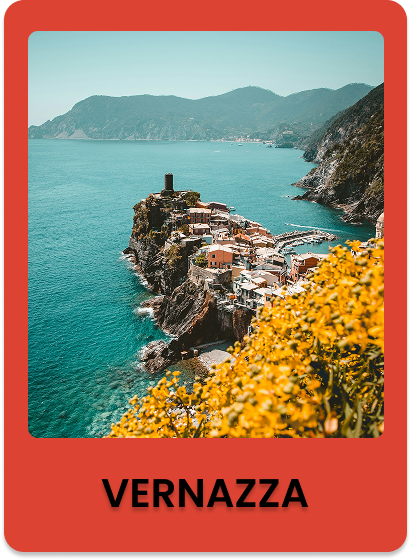
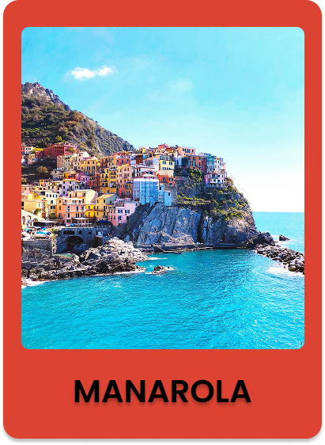

Parcours emblématique reliant les cinq villages, le Sentiero Azzurro offre des panoramas à couper le souffle sur la mer et les falaises. Les tronçons les plus populaires relient Vernazza à Monterosso al Mare, avec des points de vue spectaculaires à chaque détour. C’est une expérience incontournable pour les amoureux de nature et de photographie.
Perché au centre des Cinque Terre, Corniglia est entouré de vignobles en terrasses cultivés depuis des siècles. Les caves locales proposent des dégustations du Sciacchetrà, un vin doux et rare, ainsi que d’autres crus ligures. Vous pouvez y rencontrer des producteurs passionnés et découvrir les secrets de cette viticulture unique, suspendue entre ciel et mer.
Pour une découverte plus active, loue un kayak ou un stand-up paddle à Monterosso ou Manarola. Vous pourrez explorer les criques cachées, les grottes marines et profiter d’une vue imprenable sur les villages depuis la mer. C’est une activité relaxante et rafraîchissante, idéale lors des journées ensoleillées.
Explorez les Cinque Terre et laissez-vous séduire par leurs villages colorés, leurs ruelles pittoresques et leurs panoramas spectaculaires.
Célébrez l’Italie à deux : balades au coucher du soleil, dégustations de vin dans les vignobles en terrasses et moments inoubliables au bord de la mer.
Partez à l’assaut des sentiers côtiers et explorez la côte depuis la mer en kayak. Entre nature et sensations, ce séjour est idéal pour les passionnés d’aventure.
Réservez avant le 31 octobre et bénéficiez de -10% sur le Séjour Découverte 3 jours / 2 nuits !